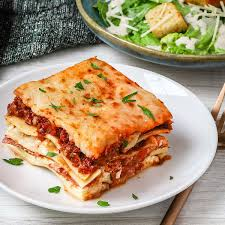

Lasagna

Description
Lasagna (UK: /ləˈzænjə/,[1] US: /ləˈzɑːnjə/; Italian: [laˈzaɲɲa]), also known by the Italian plural lasagne
(Italian: [laˈzaɲɲe]), is a type of pasta, possibly one of the oldest types,[2] made in very wide, flat sheets.
In Italian cuisine it is made of stacked layers of pasta alternating with fillings such as ragù (ground meats
and tomato sauce), béchamel sauce, vegetables, cheeses (which may include ricotta, mozzarella, and Parmesan),
and seasonings and spices.[3] The dish may be topped with grated cheese, which melts during baking. Typically
cooked pasta is assembled with the other ingredients and then baked in an oven (al forno). The resulting baked
pasta is cut into single-serving square or rectangular portions.
- Ingredients:
- lasagna noodles
- meat sauce
- tomato sauce
- ricotta cheese
- mozzarella cheese
- Parmesan cheese
- Steps:
- Step 1
To make the meat sauce, heat 2 tbsp olive oil in a frying pan and cook 750g lean beef mince in two batches
for about 10 mins until browned all over.
- Step 2
Finely chop 4 slices of prosciutto from a 90g pack, then stir through the meat mixture.
- Step 3
Pour over 800g passata or half our basic tomato sauce recipe and 200ml hot beef stock. Add a little grated
nutmeg, then season.
- Step 4
Bring up to the boil, then simmer for 30 mins until the sauce looks rich.
- Step 5
Heat the oven to 180C/160C fan/gas 4 and lightly oil an ovenproof dish (about 30 x 20cm).
- Step 6
Spoon one third of the meat sauce into the dish, then cover with some fresh lasagne sheets from a 300g pack.
Drizzle over roughly 130g ready-made or homemade white sauce.
- Step 7
Repeat until you have three layers of pasta. Cover with the remaining 390g white sauce, making sure you
can’t see any pasta poking through.
- Step 8
Scatter 125g torn mozzarella over the top.
- Step 9
Arrange the rest of the prosciutto on top. Bake for 45 mins until the top is bubbling and lightly browned.
Home